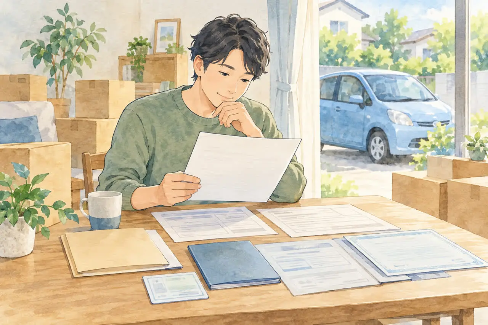

住所や名字が変わった方へ
車検証と今の住所・名前が違う場合の
廃車手続き
公開
こんにちは、東京都足立区江北で自動車解体・廃車買取をしている「大崎商店 環七店」です。
「引っ越したけれど、車検証の住所は前のまま」
「結婚して名字が変わった。廃車の書類はどうすればいい？」
廃車のご相談では、このような「車検証と今の住所・名前が違う」というご相談を、よくいただきます。
車検証と現在の住所・氏名が違っていても、それだけで廃車ができなくなるわけではありません。 ただし、変更の経緯を確認する書類が必要になることがあります。
この記事では、個人が所有する普通車の廃車について、住所や氏名が変わった場合の準備を、具体例でご紹介します。後半では、足立区の大崎商店への相談方法もご紹介します。
① まず、車検証の「所有者」を確認しましょう

普通車の廃車では、車検証に記録された所有者の情報と、印鑑証明書の住所・氏名を、見比べて確認します。運転している人や使用者ではなく、所有者の情報を確認するのがポイントです。
電子車検証は、所有者の情報が券面に書かれていません。「自動車検査証記録事項」や「車検証閲覧アプリ」で確認してください。
次のような場合は、住所変更だけの場合と、準備が変わります。
- 所有者がローン会社や販売店：その会社への確認が先になります。くわしくは「ローンが残っている車は廃車できる？」の記事をご覧ください
- 所有者が亡くなったご家族：相続の書類も必要になります。くわしくは「亡くなった家族の車を廃車するときの手続き」の記事をご覧ください
所有者（名義人）と使用者が違う場合は、「名義が家族・知人のままの車を廃車したい｜所有者と使用者が違うときの進め方」の記事もご覧ください。
② どのケースに当てはまる？
まずは、次の表で、ご自身のケースを確認してください。くわしい説明は、このあとの項目でご紹介します。
| ケース | 例 | 準備する書類の目安 |
|---|---|---|
| 引っ越しが1回 | A住所 → B住所（現在） | A住所からB住所へのつながりがわかる住民票など |
| 引っ越しが複数回 | A住所 → B住所 → C住所（現在） | 戸籍の附票、住民票の除票など。つながりがわかる組み合わせ |
| 名字が変わった | 旧姓 → 現在の姓 | 変更の前後の氏名がわかる書類（戸籍謄本・抄本など） |
| 住所も名字も変わった | 両方 | 両方の変更の経緯がわかる書類 |
※必要な書類は、変更の経緯によって異なります。表は一般的な目安です。
③ 引っ越しが1回の場合
たとえば、車検証には「以前住んでいたA住所」、印鑑証明書には「現在のB住所」が載っているケースです。
A住所からB住所へ移ったことがわかる住民票などで、住所のつながりを確認します。現在の住所だけでなく、車検証の住所が、前の住所として記載されているかを確認してください。
「引っ越しが1回だから、どんな住民票でも大丈夫」とは限りません。取得する前に、車検証の住所と現在の住所を依頼先へ伝え、必要な記載内容を確認しましょう。
④ 引っ越しを何回かしている場合
たとえば、車検証のA住所からB住所へ移り、さらに現在のC住所へ引っ越したケースです。
現在の住民票で「B住所 → C住所」しか確認できない場合は、車検証のA住所までつながりません。戸籍の附票や、以前の住民票の除票などで、不足する経緯を確認することがあります。
| 書類 | 確認するポイント |
|---|---|
| 住民票 | 車検証の住所から現在の住所への変更が確認できるか |
| 戸籍の附票 | 必要な期間の住所の履歴が記載されているか |
| 住民票の除票 | 以前住んでいた自治体での住所や転出先などが確認できるか |
どれか1枚を取れば必ず足りる、というわけではありません。車検証の住所から現在までのつながりが確認できる組み合わせを、依頼先と確認してから取得してください。
- 戸籍の附票は、一般に、本籍のある市区町村で取ります。今の住所の役所とは限りません
- 以前住んでいた自治体の書類は、その自治体に請求する場合があります。郵送で請求できるかどうかは、自治体で異なります
- 請求先や取得方法は、関係する市区町村にご確認ください
⑤ 結婚などで名字が変わった場合
車検証が旧姓のままの場合は、変更前後の氏名がわかる書類を用意します。住民票などで変更を確認できない場合には、戸籍謄本・抄本などが必要になります。
たとえば、車検証は旧姓、印鑑証明書は現在の姓というケースです。現在の氏名だけが載った書類では、同じ人であることを確認できない場合があります。
住所も氏名も変わっている場合は、両方の変更の経緯を確認する必要があります。「結婚前の住所・旧姓で車を登録し、その後に転居した」など、状況をまとめて依頼先に伝えましょう。
書類を取る前に、確認しておきたいこと
書類は、取ってから「違う書類だった」とわかると、手間も費用も、無駄になってしまいます。取る前に、次の3点を確認してください。
- 車検証（または記録事項）の所有者の住所・氏名と、現在の住所・氏名を、見比べる
- 書類の種類（住民票、戸籍の附票、戸籍謄本など）と、記載してほしい内容（前住所、変更の履歴など）を、依頼先に確認する
- 書類の有効期限（発行から何か月以内か）を、依頼先に確認する。印鑑証明書は、発行から3か月以内のものが必要です。くわしくは、「廃車に必要な印鑑証明書は何通？いつまでのものが使える？」の記事をご覧ください
高齢の親御さんの車で、免許返納後に処分したいときは、「免許を返納した親の車、どう処分する？」の記事もご覧ください。
書類がそろわないときは？
古い住所の記録が取得できない場合や、どの書類を取ればよいかわからない場合は、自己判断で書類を集めず、手続きを依頼する会社や管轄の運輸支局へ相談してください。
必要な確認や対応は、個別の事情で異なります。相談するときは、車検証の住所・氏名、現在の住所・氏名、わかる範囲の転居・改姓の経緯を伝えると、確認しやすくなります。
廃車の窓口が、ナンバーの地名や住まいと違うときは、「足立ナンバーの廃車はどこで？足立の窓口が受け持つ7区と、他地域ナンバーの手続き」の記事をご覧ください。
軽自動車の場合は？
軽自動車の通常の廃車手続きでは、基本的に印鑑証明書や実印は不要です。普通車と同じ書類を、そのまま一式そろえる必要はありません。
ただし、所有者の承諾や、手続きの組み合わせによって、確認事項が変わります。車検証の情報と現在の状況を、依頼先へ伝えてください。軽自動車の準備は、「軽自動車の廃車に必要な書類・準備チェックリスト」の記事にまとめています。
よくある質問
Q. 引っ越してから、車検証の住所を変えていません。廃車はできますか？
A. できる場合があります。車検証の住所から現在の住所までのつながりを確認できる書類を用意します。書類を取る前に、ご相談ください。
Q. 住民票を取れば、足りますか？
A. 引っ越しが1回で、前の住所が車検証の住所と一致していれば、住民票で足りる場合があります。引っ越しが複数回の場合は、戸籍の附票などが必要になることがあります。
Q. 結婚して名字が変わりました。印鑑証明書は新しい姓でよいですか？
A. 印鑑証明書は、現在の氏名のものを取ります。車検証が旧姓のままの場合は、旧姓から現在の姓へのつながりがわかる書類（戸籍謄本・抄本など）もあわせて必要になることがあります。
Q. 古い住所の書類が取れません。
A. 自己判断で集めず、依頼先や運輸支局にご相談ください。個別の事情に合わせて、確認する方法をご案内します。
Q. 軽自動車でも、同じ書類が必要ですか？
A. 軽自動車の通常の廃車では、基本的に印鑑証明書や実印は不要です。車検証と現在の状況を、依頼先に伝えてください。
大崎商店の場合：書類を取る前にご相談ください
ここからは、足立区の大崎商店の場合をご紹介します。
足立区江北の大崎商店 環七店では、車検証の記録と現在の住所・氏名を伺い、廃車に必要な書類をご案内します。
お電話の前に、次の内容を用意しておくと、スムーズです。
- 車検証、または自動車検査証記録事項
- 所有者の現在の住所・氏名
- 引っ越しや氏名変更の経緯（わかる範囲で）
- 車種・車の状態・車が置いてある場所
委任状や譲渡証明書は、当店で用意します。印鑑証明書の必要通数や取得時期も、あわせて確認できます。
大崎商店では、
- 廃車手続きの代行・解体の費用は無料
- 買取価格がつかない車も、環七店から片道約30分圏内は引き取り無料
- 買取価格がつく車は、圏外でも、所在地と車の状態によっては無料で引き取り（事前にご案内します）
- 車のお持ち込みは、どこからでも歓迎（基本は環七店。日時は、事前にお電話でご相談ください）
住所・名前が違う車のことも、大崎商店にご相談ください
電話で相談する 03-3854-4141メールで相談する（フォーム）ご来店の前に、お電話ください。引き取りなどで外出していることもあり、お電話いただければ、受け入れの可否や、ご案内できる日時をお伝えできます。
大崎商店 環七店
電話：03-3854-4141
〒123-0872
東京都足立区江北7丁目1−3
営業時間：月〜土 10:00〜18:00
休業日：日曜・祝日
環七沿い／舎人ライナー
西新井大師西駅
大崎商店 入谷店
電話：03-3899-2837
〒121-0836
東京都足立区入谷7丁目5−11
営業時間：月〜土 9:30〜17:30
休業日：日曜・祝日・第2土曜
引き取りやご相談のお電話は、環七店がスムーズです。お電話の際は、「車検証と今の住所・名前が違う」とお伝えください。車検証（または自動車検査証記録事項）をお手元にご用意いただくと、ご案内がスムーズです。
※掲載のイラストはAIで作成したイメージです。実際の店舗・役所の窓口を撮影したものではありません。
参考：国土交通省 東北運輸局・永久抹消登録（住所・氏名の変更に関する必要書類）／軽自動車検査協会・解体返納